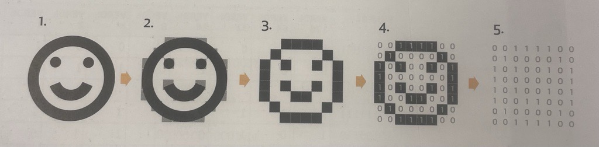

Bildepunkter
Et digitalt bilde er laget av små punkter som kalles piksler. Jo flere piksler et bilde har, desto bedre blir kvaliteten. Men flere piksler gjør også at bildet tar opp mer plass på datamaskinen.
Bilder blir digitalisert i en datamaskin. Ved å bruke et enkelt smilefjes som eksempel, deles bildet inn i små bildepunkter med to farger: svart og hvitt. Hvert bildepunkt representeres av et tall, hvor 1 står for svart og 0 for hvitt. Slik kan maskinen lage en digital versjon av bildet.
Datamaskinen kan gjenskape et bilde ved kun å bruke en tallrekke og informasjon om bildets struktur. I eksempelet her er bildet organisert som et rutenett med 8x8 punkter. Når maskinen vet dette, kan den bruke tallrekken til å gjenskape mønsteret i bildet.